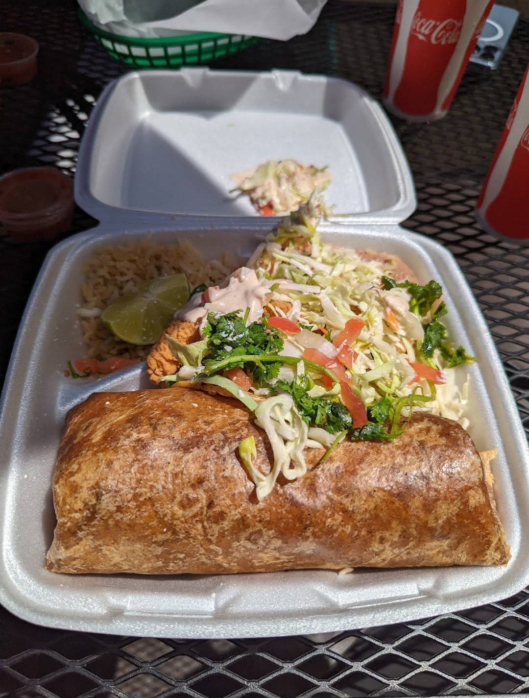
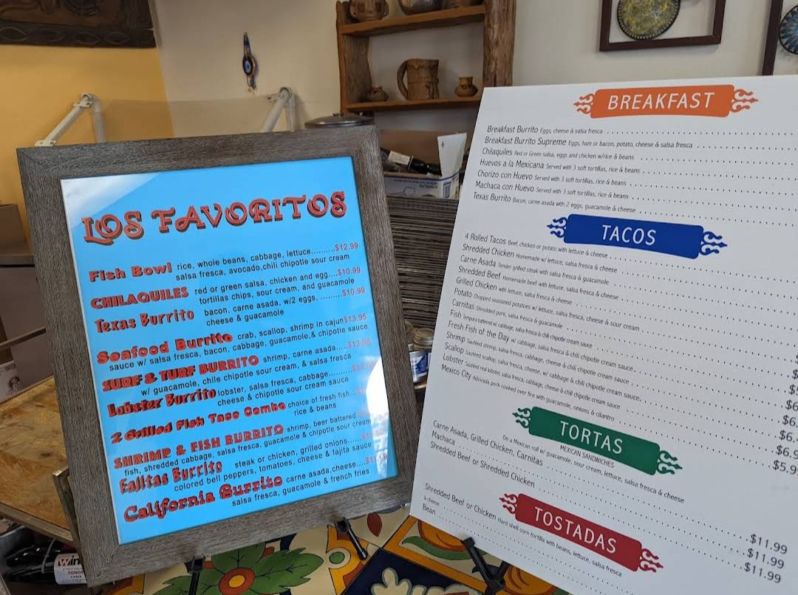

Mi Ranchito Mexican Restaurant
Favorite meal I have had in all of California.
12812 Rancho Peñasquitos Blvd, San Diego, CA 92129
Rating: 5/5
The Owner who is also a Chef is awesome and super friendly. Best food I have had in California. Highly recommend the Lobster Burrito, Surf and Turf (Steak and Carne Asada), the Seafood Burrito or the fish taco. All were so fresh and tasted amazing. Had no choice but to order again after eating so I could have leftover for later.
Lobster Burrito · Surf & Turf · Seafood Burrito · Fish Taco
About the place
Family-owned Mexican seafood restaurant in Rancho Peñasquitos, located behind McDonald's. They bring in fresh fish every day and make salsas, guacamole and beans from scratch, cooking each order fresh. It's known for big stuffed burritos, especially the Seafood Burrito (crab, scallops and shrimp in Cajun sauce) and the Lobster Burrito. The Surf & Turf burrito on their menu is shrimp and carne asada. Open Monday to Saturday, closed Sunday.
What other diners say: Reviewers on Yelp and Google often praise the freshness of the seafood, the generous burritos and the friendly owner, and many say the seafood and lobster burritos are worth the drive.
Sources: Mi Ranchito's website and menu (SinglePlatform), Postmates and Yelp. Summaries are paraphrased, not quotes.


Comments
Sign in with GitHub to leave a comment or reaction.